HTML AND CSS
Addresses client side development utilizing HTML5, cascading style sheets (CSS3), and relevant scripting libraries. Compare and contrast types of graphics and graphical editing tools. Apply client side scripting to enable dynamic user interface presentation. Utilize external HTTP data sources. Deploy content to one or more external hosting providers. Use appropriate integrated development environment (IDE) to develop and deploy code. Explore current tools and techniques in client side development.
HTML- Hypertext Markup Language
How to code, Test and Validate Webpages
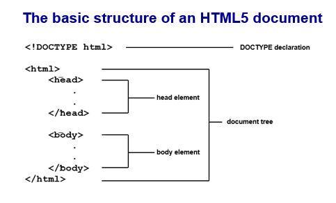 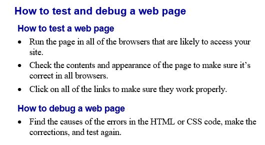 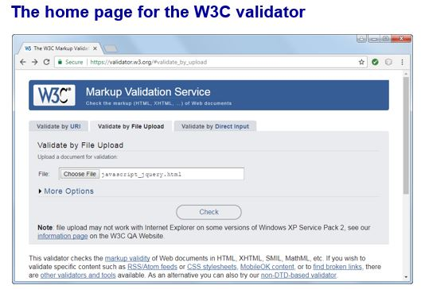 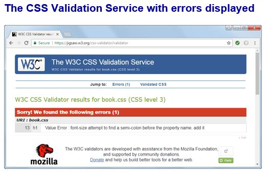Enter HTML for the Homepage
CSS - Cascase Style Sheets
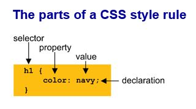

 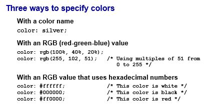
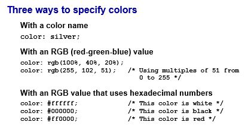
Format the Town Hall Page
More CSS (Box, Layout);
CSS Box model for spacing, borders, background
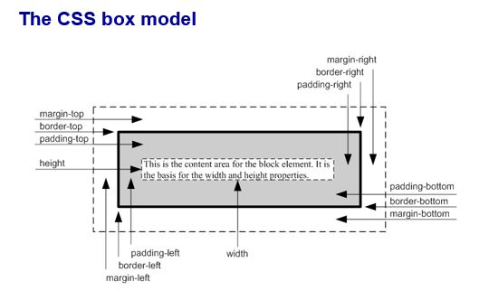 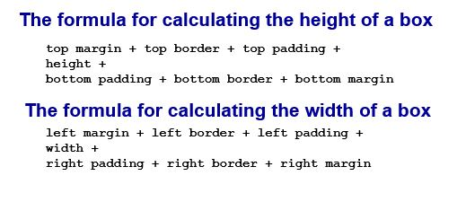 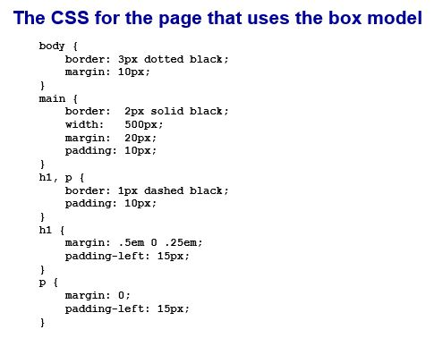 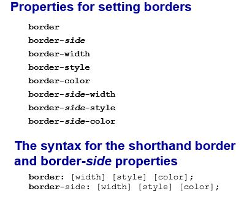Responsive Web Design (RWD), Flexbox and Grid Layout
RWD
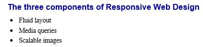THREE COMPONENTS OF RESPONSIVE WEB DESIGN
- Fluid Layout
- Media queries
- Scalable images
Grid Layout
Forms & JavaScript
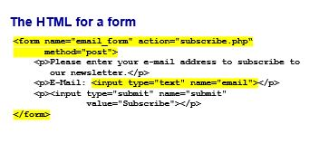